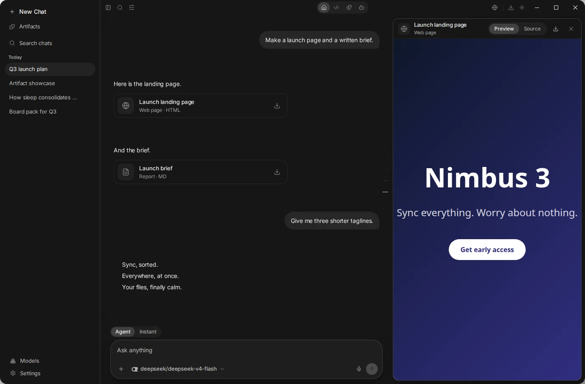

Desktop. A workspace for the whole task: Home, Code, Design and Roleplay in one app, with local models and voice.
- Home, Code, Design and Roleplay
- Artifacts in the dock
- llama.cpp models, CPU or GPU
- Voice in and out
- Seven languages
One Rust agent core behind a desktop, a terminal, and a server you host.

Desktop. A workspace for the whole task: Home, Code, Design and Roleplay in one app, with local models and voice.

Code. A keyboard-first terminal agent. It plans, asks before acting, and stays in your repository.
# keep sessions running
$ agente serve
$ agente serve --status
# join from any terminal
$ agente attach
# or host it yourself
$ docker run -d --name agente \
-p 127.0.0.1:7420:7420 -e AGENTE_TOKEN \
-v agente-data:/home/agente/.agente \
ghcr.io/fabricio3g/agente-serverServer. The runtime behind Desktop, running headless on a machine you control. Preview
Bring your own keys, or run GGUF models locally with llama.cpp, Ollama or LM Studio. Spend is shown per call, and estimates are labeled as estimates.
Start with a read-only plan, approve each tool as you build, or go auto. Review every diff, and revert or fork from any message.
Sessions and project files stay on your disk. Keep them running on your own server with agente serve.
Works with
mkdir -p ~/.local/bin
curl -fL -o ~/.local/bin/agente \
https://github.com/fabricio3g/AgenteCode/releases/latest/download/AgenteCode-linux-x64
chmod +x ~/.local/bin/agente
agenteOther builds:
Linux arm64 ·
Windows x64 ·
Debian amd64 ·
Debian arm64 ·
AgenteCode-SHA256SUMS.
Then run /provider and /model.
Verify downloads with AgenteDesktop-SHA256SUMS. On macOS, build it from source (see the Desktop guide).
export AGENTE_TOKEN=$(openssl rand -hex 32)
docker run -d --name agente \
-p 127.0.0.1:7420:7420 \
-e AGENTE_TOKEN -e OPENROUTER_API_KEY \
-v agente-data:/home/agente/.agente \
-v "$PWD/workspace:/workspace" \
ghcr.io/fabricio3g/agente-server:latestPreview image. Keep the token, because clients need it. See the Server guide.